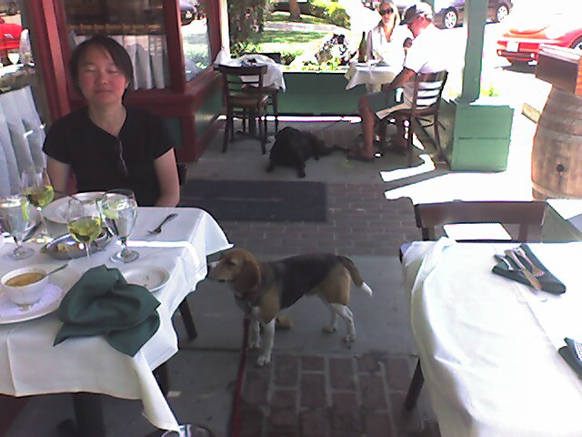

<--Previous
Up
Next-->

The Side Street Cafe
Chef Patrick welcomes dogs to the porch of his cafe in Los Olivos. Penny is really, really enjoying her oyster stew after a car-free morning of wine tasting on Los Olivos' main drag.